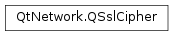

QSslCipher¶
Synopsis¶
Functions¶
- def
__eq__(other) - def
__ne__(other) - def
authenticationMethod() - def
encryptionMethod() - def
isNull() - def
keyExchangeMethod() - def
name() - def
protocol() - def
protocolString() - def
supportedBits() - def
swap(other) - def
usedBits()
Detailed Description¶
The
PySide2.QtNetwork.QSslCipherclass represents an SSL cryptographic cipher.
PySide2.QtNetwork.QSslCipherstores information about one cryptographic cipher. It is most commonly used withPySide2.QtNetwork.QSslSocket, either for configuring which ciphers the socket can use, or for displaying the socket’s ciphers to the user.
-
class
PySide2.QtNetwork.QSslCipher¶ -
class
PySide2.QtNetwork.QSslCipher(other) -
class
PySide2.QtNetwork.QSslCipher(name) -
class
PySide2.QtNetwork.QSslCipher(name, protocol) Parameters: - protocol –
PySide2.QtNetwork.QSsl.SslProtocol - other –
PySide2.QtNetwork.QSslCipher - name – unicode
Constructs an empty
PySide2.QtNetwork.QSslCipherobject.Constructs an identical copy of the
othercipher.Constructs a
PySide2.QtNetwork.QSslCipherobject for the cipher determined byname. The constructor accepts only supported ciphers (i.e., thenamemust identify a cipher in the list of ciphers returned byQSslSocket.supportedCiphers()).You can call
PySide2.QtNetwork.QSslCipher.isNull()after construction to check ifnamecorrectly identified a supported cipher.Constructs a
PySide2.QtNetwork.QSslCipherobject for the cipher determined bynameandprotocol. The constructor accepts only supported ciphers (i.e., thenameandprotocolmust identify a cipher in the list of ciphers returned byQSslSocket.supportedCiphers()).You can call
PySide2.QtNetwork.QSslCipher.isNull()after construction to check ifnameandprotocolcorrectly identified a supported cipher.- protocol –
-
PySide2.QtNetwork.QSslCipher.authenticationMethod()¶ Return type: unicode Returns the cipher’s authentication method as a
PySide2.QtCore.QString.
-
PySide2.QtNetwork.QSslCipher.encryptionMethod()¶ Return type: unicode Returns the cipher’s encryption method as a
PySide2.QtCore.QString.
-
PySide2.QtNetwork.QSslCipher.isNull()¶ Return type: PySide2.QtCore.boolReturns
trueif this is a null cipher; otherwise returnsfalse.
-
PySide2.QtNetwork.QSslCipher.keyExchangeMethod()¶ Return type: unicode Returns the cipher’s key exchange method as a
PySide2.QtCore.QString.
-
PySide2.QtNetwork.QSslCipher.name()¶ Return type: unicode Returns the name of the cipher, or an empty
PySide2.QtCore.QStringif this is a null cipher.
-
PySide2.QtNetwork.QSslCipher.__ne__(other)¶ Parameters: other – PySide2.QtNetwork.QSslCipherReturn type: PySide2.QtCore.boolReturns
trueif this cipher is not the same asother; otherwise, false is returned.
-
PySide2.QtNetwork.QSslCipher.__eq__(other)¶ Parameters: other – PySide2.QtNetwork.QSslCipherReturn type: PySide2.QtCore.boolReturns
trueif this cipher is the same asother; otherwise, false is returned.
-
PySide2.QtNetwork.QSslCipher.protocol()¶ Return type: PySide2.QtNetwork.QSsl.SslProtocolReturns the cipher’s protocol type, or
QSsl.UnknownProtocolifPySide2.QtNetwork.QSslCipheris unable to determine the protocol (PySide2.QtNetwork.QSslCipher.protocolString()may contain more information).
-
PySide2.QtNetwork.QSslCipher.protocolString()¶ Return type: unicode Returns the cipher’s protocol as a
PySide2.QtCore.QString.
-
PySide2.QtNetwork.QSslCipher.supportedBits()¶ Return type: PySide2.QtCore.intReturns the number of bits supported by the cipher.
-
PySide2.QtNetwork.QSslCipher.swap(other)¶ Parameters: other – PySide2.QtNetwork.QSslCipherSwaps this cipher instance with
other. This function is very fast and never fails.
-
PySide2.QtNetwork.QSslCipher.usedBits()¶ Return type: PySide2.QtCore.intReturns the number of bits used by the cipher.
© 2018 The Qt Company Ltd. Documentation contributions included herein are the copyrights of their respective owners. The documentation provided herein is licensed under the terms of the GNU Free Documentation License version 1.3 as published by the Free Software Foundation. Qt and respective logos are trademarks of The Qt Company Ltd. in Finland and/or other countries worldwide. All other trademarks are property of their respective owners.